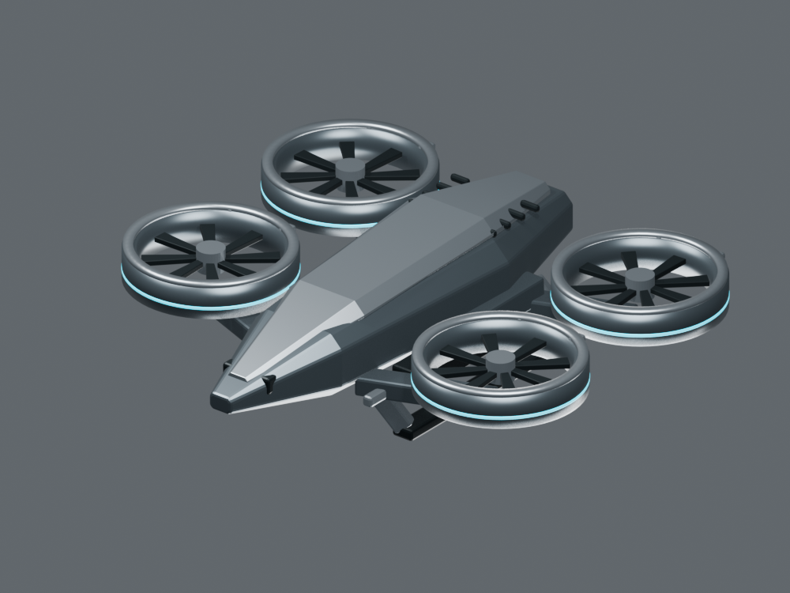

対称構造から作る共通機体
低い胴体、鋭いノーズ、高出力ダクト、収納した装備。全方向は同じ3Dモデルから描画。今回の四発案と各ロールの輪郭は承認前です。
同じ造形言語、異なる機能の輪郭
アイテムの再設計仕様です。最終アイコンは承認した正本モデルから生成します。ここに完成済みのアイコンは掲載していません。
| アイテム | 新しい形状 | 小表示で残す特徴 |
|---|
戦術画面と機械通信
MORROWGEAR C2OVERWORLDLINK ONLINE24機 / 3 Wings
部隊
Wing所属は任務割込でも維持
BASE / SERVICE
ALPHA / ROUTE 1 → 2 → 3
作戦巡回 1 / 待機 2異常なし
選択部隊と対象地点を確認できます。命令はゲームへ送信されません。

24 ONLINE · 1 ACTIVE WING · LINK NORMAL
ALPHA / 巡回
飛行 82% · 武器 100%
飛行 82% · 武器 100%
通信は重要な変化を一報に集約
HMIの応答順序
対象選択命令受理 / 拒否実行中断 / 復帰結果
音声は未収録。上の通信欄は字幕案です。毎射・毎ブロックの通知はせず、状態と重要度に応じて部隊単位にまとめます。